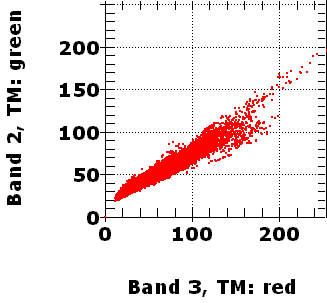
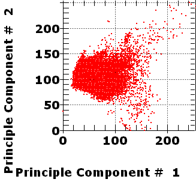
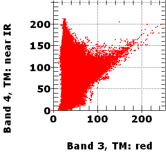
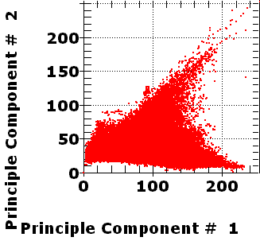

Satellite analysis--Principal Components (2 band examples)
General discussion, and example with 7 bands
 |
 |
| Scatter grams, bands 2 and 3. These bands are highly correlated. In principal components, the axes are rotated so that the first axis goes through the main cloud of data. Both axes are scaled so that values range from 0-255. Because almost all points lie along a single line as indicated by the very high correlation coefficient, PC1 explains almost all the data (98.63%). | |
| Band 3, TM: red | Band 2, TM: green | |
| Band 3, TM: red | 1.00 | 0.96 |
| Band 2, TM: green | 0.96 | 1.00 |
| PC1 | PC2 | Notes | |
| Eigenvalue | 265.62 | 3.69 | |
| Explains | 98.63 | 1.37 | |
| Band 3, TM: red | 0.86895 | -0.49491 | PC1 is a mixture of bands 2 and 3, which a higher loading from Band 3 |
| Band 2, TM: green | 0.49491 | 0.86895 |
 |
 |
| Scatter grams, bands 1 and 4. These bands are poorly correlated (r=0.27), and rotation of the axes leads to a PC1 that explains 93.42% of the information. | |
Correlation Matrix
| Band 3 TM: red 0.63-0.69 | Band 4 TM: near IR 0.76-0.90 | |
| Band 3 TM: red 0.63-0.69 | 1.00 | 0.27 |
| Band 4 TM: near IR 0.76-0.90 | 0.27 | 1.00 |
| PC1 | PC2 | Notes | |
| Eigenvalue | 2631.06 | 185.33 | |
| Explains | 93.42 | 6.58 | |
| Band 3, TM: red 0.63-0.69 | 0.08122 | 0.99670 | PC2 is almost entirely Band 3. |
| Band 4, TM: near IR 0.76-0.90 | 0.99670 | -0.08122 | PC1 is almost entirely Band 4 |